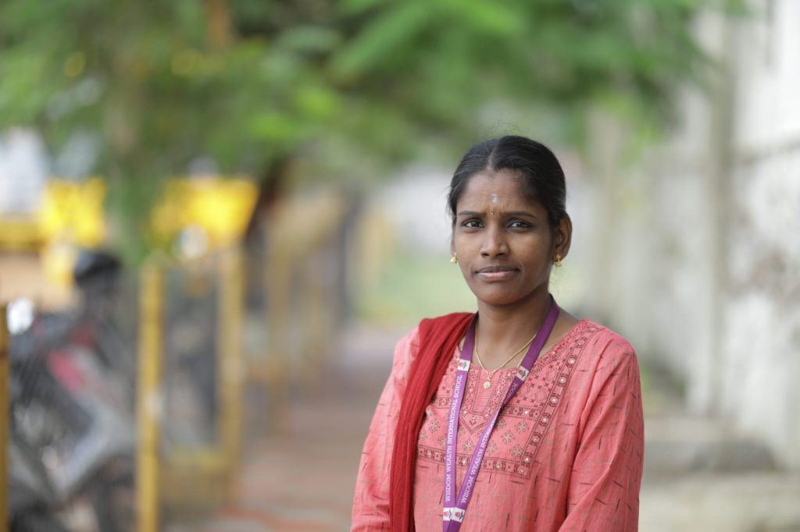
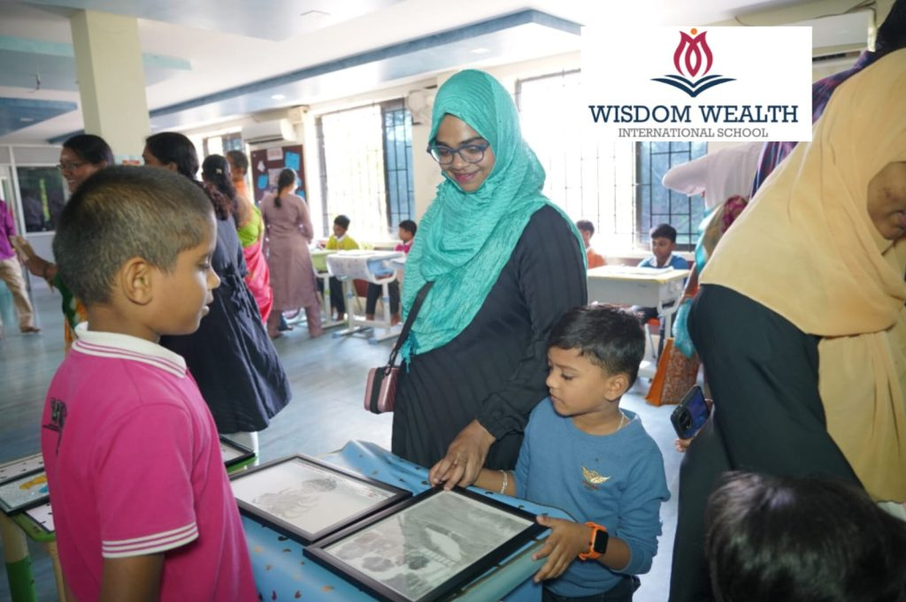
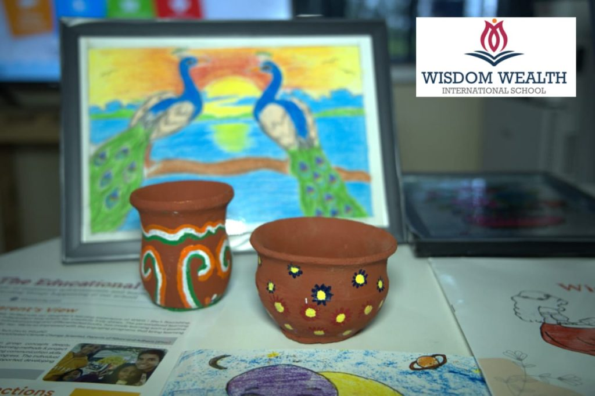

By Gayathri, ILP Coordinator, Wisdom Wealth International School

At Wisdom Wealth International School, we believe that every child has unique strengths waiting to be discovered. As an ILP (Individual Learning Plan) Coordinator, I had the privilege of witnessing an incredible journey of transformation in a young student named Madhin, who is currently in Grade 5. His story is a testament to the power of patience, structured interventions, and a personalized approach to learning.
The Initial Challenges
Madhin’s journey began when he was in Grade 3. From the start, we observed that he faced several challenges:
Difficulty in listening and focusing on lessons
The need for one-on-one attention for even simple tasks
Struggles with reading, writing, and understanding concepts
Lack of participation in peer learning activities
Difficulty in taking care of his belongings
His parents also shared their concerns. They noticed that he would not respond immediately when spoken to, would take an extended time to complete even simple tasks, and had trouble expressing his needs. Additionally, he often seemed lost in his imagination, making classroom engagement even more challenging.
Identifying the Core Issues
Through discussions with subject facilitators and careful classroom observations, we identified that Madhin struggled with focus and alertness. Addressing these fundamental issues became our primary goal, and we collaborated with his parents to implement structured strategies both at home and at school.
The Approach: Step-by-Step Interventions
To support Madhin’s development, we introduced a series of targeted interventions, focusing on improving his attention, cognitive skills, and overall confidence.
1. Building Communication and Trust
I began by spending 15 minutes daily with Madhin, engaging him in simple conversations. This continued for two to three months, gradually helping him become comfortable and responsive. Over time, he started opening up and cooperating better.
2. Enhancing Focus Through Activities
To develop his concentration, we introduced interactive activities such as:
11 Sticks Game – A task requiring careful movement of sticks without disturbing others, which helped improve his attention to detail.
Building a Tower – We started with a three-foot tower and gradually increased the challenge, making the activity enjoyable and engaging.
These exercises significantly improved his focus and engagement with tasks.
3. Structured Smart Moves
To further develop his alertness, we incorporated eight structured smart moves, including:
Cross Crawl
Super Brain Yoga
Lazy 8
Elephant Ears
These activities were practiced for 20 minutes daily at school and were recommended to his parents for home practice as well.
4. Nutrition-Based Support
Understanding the connection between diet and cognitive function, we recommended specific foods:
Ash Gourd Juice – Given thrice a week to help improve focus
Lady’s Finger (Okra) – Introduced to help him with satisfaction in completing tasks, as he exhibited a strong need for perfection in his work
5. Encouraging His Unique Strength: Drawing
One of the most remarkable discoveries was Madhin’s ability to express answers through drawings. Whether it was Math, Science, or Humanities, he translated his thoughts into pictures. To nurture this talent, we structured a daily routine where he observed live objects and drew at least three pictures. This not only honed his artistic skills but also improved his ability to focus and complete tasks efficiently.
The Transformation
Now in Grade 5, Madhin has shown a drastic improvement in his speaking, listening, reading, and writing skills. His ability to think critically and engage with lessons has significantly enhanced. The combination of structured movements, dietary support, and artistic expression has enabled him to overcome his initial struggles and unlock his potential.
Conclusion
Madhin’s journey highlights the importance of a personalized learning approach in nurturing a child’s growth. By recognizing his unique strengths and addressing his challenges with a structured plan, we witnessed an inspiring transformation. His story reaffirms our belief that with the right support, patience, and encouragement, every child can thrive.
At Wisdon Wealth International School, we are committed to continuing such individualized interventions, ensuring that every child’s strengths are discovered and nurtured.
Thank you for reading. We hope Madhin’s journey inspires more educators and parents to explore innovative ways to support children in their learning journey!

